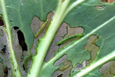

| Home |
| CRUCIFEROUS VEGETABLES |
MAJOR PESTS |
| 1. Diamond back moth |
| 2. Leaf webber |
| 3. Cabbage semilooper |
| 4. Cabbage butterfly |
| 5. Cabbage borer |
| 6. Mustard sawfly |
| 7. Cabbage aphid |
| 8. Cabbage flea beetle |
| Questions |
| Download Notes |
CRUCIFEROUS VEGETABLES :: MINOR :: DIMOND BACK MOTH
1. Diamond back moth: Plutella xylostella (L.) (Plutellidae: Lepidoptera)
Distribution and status: World - wide
Host range: Serious past of Cabbage and cauliflower, but also feeds on other crucifers and solanaceous plants.
Damage symptoms
First instar larvae mine epidermal surface of leaves producing typical white patches. Larvae, second instar onwards feed externally making holes on the leaves and soil them with excreta. Heavy infestations leave little more than the leaf veins.
|  |
ETL: 20 larvae/l0 plants
Bionomics
Yellowish, pinhead sized eggs are laid singly or in batches of 2-40 on the underside of leaves. A female may lay 18-356 eggs in her life time. Egg period 2 - 9 days. Larva: 8-12 mm long, pale yellowish green in color, pointed at both the ends with fine erect black hairs scattered over the body. Larval period 8 -16 days. Pupa is a barrel shaped silken cocoon which is open at both the ends and is attaché d to the leaf surface. Pupal period 4-5 days. Adult: Small, greyish brown having pale whitish narrow wings with inner margins yellow. Three pale whitish triangular markings on hind margins of each forewing are prominent. At rest, a dorsal median patch of three diamond shaped yellowish white spots clearly visible by joining both forewings. Hind wings have a fringe of long hairs. Adult moth may live for about 20 days. Total life cycle is completed in 15-18 days. There are several generations in ayear.
Management
- Grow mustard as trap crop. Raise 2 rows of mustard for every 25 rows of cabbage. Sow first mustard crop 15 days prior to cabbage planting or plant 20 days old mustard seedling at the time of cabbage planting. Plant 35 days old cabbage seedlings.
- Install pheromone trap to monitor DBM adults @ 5 /ha and 25/ha for mass trapping
- Apply Bacillus thuringiensis formulation @1 g/L or NSKE 4% spray. Alternate Bt. sero types kurstaki (B.t.k.)and aizawal (B.t.a.)
- Reduce insects colonising on mustard to prevent defoliation of the entire plant by applying dichlorovas 350 at 10 or 15 days interval starting from 15 days after sowing.
- Conserve larval parasitoids viz., Cotesia plutellae in plains and Diadegma semiclausum in hills. Release 40,000 adults / ac, five times @ 8,000 adults/release commencing from 20 days after planting. Also encourage other parasitoids like Apanteles sicarius, Tetrastychus sokolowski (larval) Diadrumus collaris (larval pupal) and Brachymeria excarinata (pupal parasitoids)
- Depending upon the pest intensity, spray any of the following insecticide with 500 -1000 L water/ha primordial or head initiation stage. Mix teepol or sandovit 0.5 ml/Lt of water whenever sprays are made
- Note: Primordial formation takes place between 17 and 25 days after planting, depending on variety.
|
|
|
|
|
|
|
|
|
|
|
|
|
|
|
|